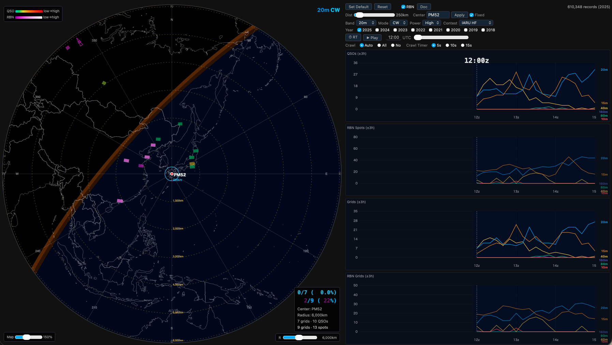
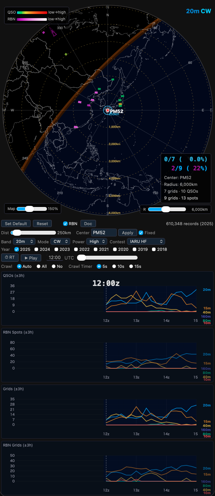
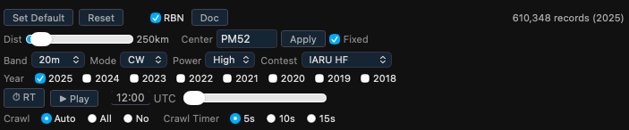
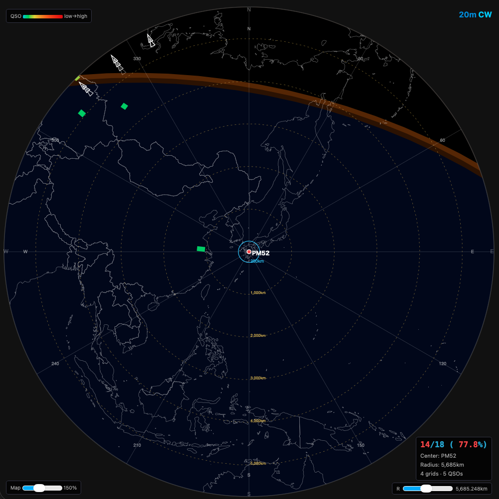
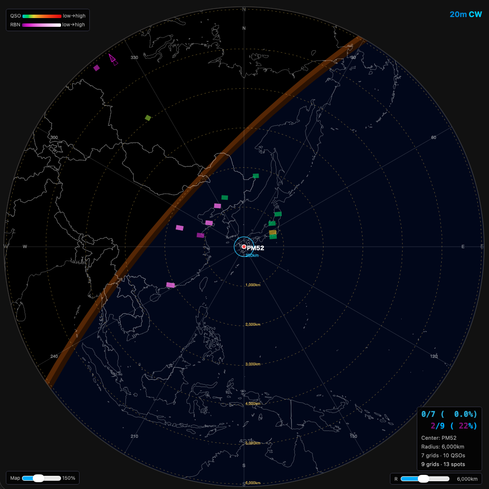
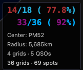
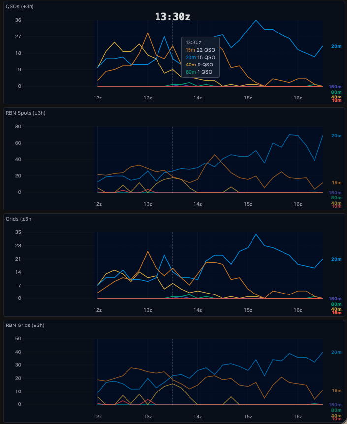
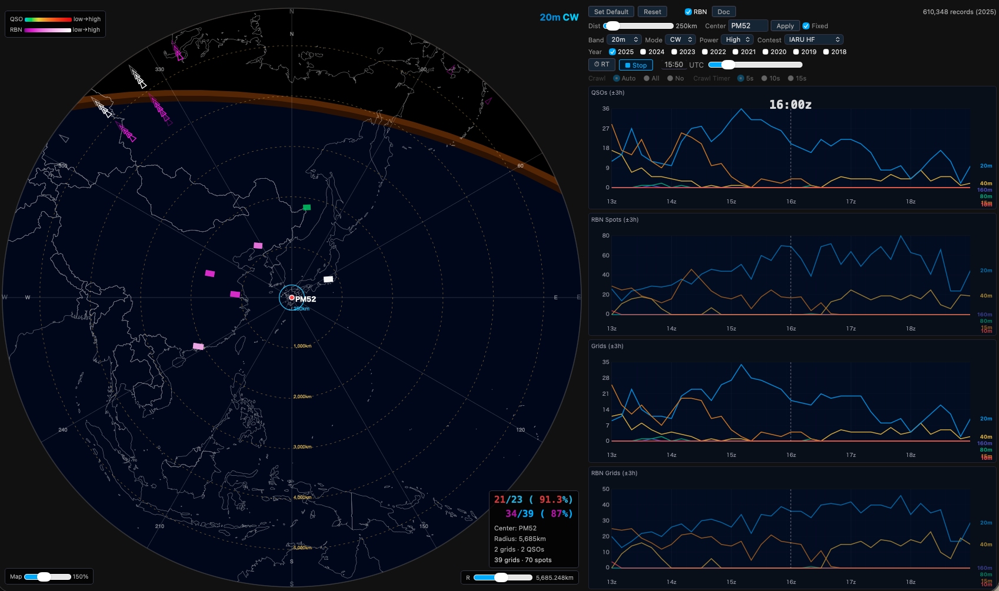

PropMapは、アマチュア無線コンテストの公開ログデータおよび RBN（Reverse Beacon Network）スポットデータを集約し、指定したグリッドロケーターを中心とした大圏方位図（Azimuthal Equidistant Map）上に、過去の HF 帯の電波伝搬状況をヒートマップとして可視化するツール。過去のデータをベースとしていて、同時期のコンテストでの電波伝播状況の傾向の把握に有用。過去データの再生そして、実時間に過去データの時間を合わせることでリアルタイムでの同時刻の過去データの参照が可能
コンテスト参加時の運用計画、バンドチェンジのタイミング把握、過去コンテストの伝搬傾向分析、リアルタイム参照が可能
~/heatmap/data/ に配置済みのこと）。事前データ準備の章を参照してのデータの作成が必要macOS には OS 自体に Python 3 が付属しているが、OS アップデートで置き換わるリスクや pip の利用しづらさがあるため、Homebrew 経由のインストールを推奨する。データ処理スクリプトで追加パッケージが必要になった場合も Homebrew Python であれば pip で容易に対応可能
/bin/bash -c "$(curl -fsSL https://raw.githubusercontent.com/Homebrew/install/HEAD/install.sh)"
brew install python3
python3 --version
ビューワーの利用からデータ構築まで、Python for Windows と付属の generate_all.bat にて対応。generate_all.sh は bash スクリプトのため Windows では直接実行できないため、同等の処理を行う generate_all.bat を使用する
python --version
注意: Windows では
python3ではなくpythonコマンドを使用すること
ファイルの配置先は %USERPROFILE%\heatmap\（例: C:\Users\ユーザー名\heatmap\）とする
WSL2 環境ではシェルスクリプトをそのまま利用でき、macOS と同等の操作感で使用できる。WSL2 のセットアップ手順は Microsoft 公式ドキュメント を参照。Ubuntu インストール後、以下で Python 3 を導入する：
sudo apt update && sudo apt install -y python3 python3-pip
以降の操作は macOS と同じ。ファイルの配置先は WSL2 のホームディレクトリ（~/heatmap/）とする。ブラウザは Windows 側で http://localhost:8765 にアクセスする。
~/heatmap/
├── heatmap.html メインアプリ（単一ファイル完結）
├── start_heatmap.command 起動スクリプト（macOS用）
├── start_heatmap.bat 起動スクリプト（Windows用）
├── countries-50m.json 地形データ
├── data/
│ ├── {contest}_{year}.json QSOデータ（10分解像度）
│ └── {contest}_{year}_rbn.json RBNデータ（10分解像度）
└── contest_logs/
├── raw/{contest}_{year}/*.txt 公開されたCabrilloログ
├── csv/ 処理済みCSVファイル
├── rbn/ RBNデータ
├── SN_m_tot_V2.0.txt 太陽黒点数データ（SILSO）
├── *.py データ処理スクリプト群
├── generate_all.sh QSO/RBN一括再生成スクリプト（macOS/Linux用）
└── generate_all.bat QSO/RBN一括再生成スクリプト（Windows用）
macOS / Windows (WSL2 あり)
start_heatmap.command をダブルクリックするか、ターミナルで以下を実行する。ダブルクリックでの起動ではターミナルが開くと同時にデフォルトブラウザが自動で起動されるため個別にブラウザを開く必要はない。開いたターミナルを終了させるとブラウザのウィンドウも閉じる
python3 -m http.server 8765 --directory ~/heatmap
Windows (WSL2 なし)
start_heatmap.bat をダブルクリックするか、コマンドプロンプトから以下を実行する
python -m http.server 8765 --directory %USERPROFILE%\heatmap
起動後、ブラウザで http://localhost:8765 にアクセスする
注意: ローカルのファイルサーバーが必要であるため、
heatmap.htmlをブラウザで直接開いても動作しない

画面は大きく2つのエリアで構成される
大圏地図エリア（左側 または 上側） 中心グリッドを起点とした大圏方位図にヒートマップを表示するエリア
コントロール＋グラフエリア（右側 または 下側） 表示条件の設定と、±3 時間の QSO 数・グリッド数の時系列グラフを表示するエリア
ウィンドウ幅に応じてレイアウトが自動的に切り替わる
ブラウザウィンドウが広い場合（デスクトップ・ノートPC等）は大圏地図エリアとコントロール＋グラフエリアが横並び、狭い場合（タブレット縦向き・スマートフォン等、またはウィンドウを縮小した場合）は縦積みに自動切替。

縦積み時は地図幅がウィンドウ幅いっぱいに広がり、グラフ高さは地図高さの 2.2 倍を上限として表示

Center（中心グリッド） 4文字のグリッドロケーター（例: PM52）を入力する。入力後、Apply ボタンをクリックするか Enter キーで反映される。あるいは大圏地図をドラッグして中心としたい地域を地図の中央に移動させ Apply ボタンをクリック
Dist（表示距離フィルター） スライダーで中心グリッドからの距離（km）を設定する。この距離以内に該当する局が存在する QSO・スポットのみが表示対象
Fixed チェックボックス
| 項目 | 説明 |
|---|---|
| Band | 表示するバンドを選択（160m / 80m / 40m / 20m / 15m / 10m / All (バンド混合)） |
| Mode | 表示するモードを選択（CW / SSB / All (モード混合)） |
| Power | フィルタリングするパワークラス（High / Low / QRP） |
| Contest | 表示するコンテストを選択 |
モード固定のコンテストではそのモード以外の選択は不可
Year の各チェックボックスで表示する年を選択。複数年を同時にチェックするとデータをマージして重ね合わせ表示する。複数年マージは過去の傾向を総合的に把握する際に有効。公開ログの古いものについてはグリッドロケータの情報がないものが多いためヒートマップに何も表示されないものについてはこのあたりの背景を理解しておくとよい
画面右上に読み込んだレコード数と年が表示される（例: 1,916,313 records (2025)、1,052,123 records (2024+2025)）
スライダーを左右にドラッグして表示時刻を変更する。UTC時刻が左側のテキストボックスに表示される。テキストボックスに直接時刻（例: 14:30）を入力してフォーカスを外すあるいは Enter キーで入力するとスライダーがその時刻に移動する
48時間コンテスト（CQ WW、CQ WPX）では +1d チェックボックスが表示される。チェックを入れると2日目（コンテスト開始から24時間後以降）の時刻に切り替わる
| ボタン | 動作 |
|---|---|
| Set Default | 現在の設定（中心グリッド、表示距離など）をデフォルトとして保存 |
| Reset | 設定をデフォルトに戻す |
| Apply | Center の変更を反映 |
| Doc | 操作ガイドをブラウザの言語設定に応じて別タブで開く（日本語または英語） |
スライダーを手動で動かして任意の時刻の伝搬状況を確認するモード。大圏地図に表示されるグリッドパネルとグラフは指定した時刻に連動して更新
▶ Play ボタンをクリックするとコンテスト開始時刻からスライダーが自動的に進み、伝搬の変化をアニメーションで確認可能。再生中は ■ Stop ボタンで停止
任意の時刻から再生が可能で、48時間コンテストでは +1d チェックを入れた状態で Play すると2日目から再生
⏱ RT ボタンをクリックすると現在のUTC時刻に同期してデータを表示。コンテスト開催中に現時刻に同期させての伝搬状況が確認可能
48時間コンテストでは +1d チェックボックスで1日目・2日目を切り替える。コンテスト実施週末の当日は自動的に正しい日に切り替わる

大圏方位図（Azimuthal Equidistant Map）は、中心グリッドからの距離と方位が正確に表現される地図投影法。中心から任意の点への直線が大圏（最短経路）を表す。同心円は中心からの距離（km）を示す。
4文字グリッドロケータ単位で地図上に配置される色付き矩形をグリッドパネルと呼ぶ。局が存在するグリッドごとに選択した時刻付近のQSO数を集計してグリッドパネルの色で表示。
CW のモードがあるコンテストのみ表示可能。SSBコンテストに切り替えるとチェックボックスが自動で外れてグレーアウトされる。RBN チェックボックスをONにするとRBNスポットデータをマゼンタ系の色のグリッドパネルにて表示

大圏地図の表示範囲（円）の外側に存在するグリッドは、円の外周上に三角マークとして方位角を示す形で表示。QSOデータは白系、RBNデータはマゼンタ系の三角で表示。同じ方位に複数のグリッドがある場合は少しずつずらして表示。三角マークは点滅
現在時刻の太陽の明暗境界線をオレンジ色の帯で表示。グレーラインは伝搬状況（特に低いバンド）と密接な関係がある

右下オーバーレイには以下の情報が表示される
0/21 ( 0.0%) ← QSO: 圏外グリッド数/総グリッド数（割合）
0/17 ( 0%) ← RBN: 圏外グリッド数/総グリッド数（割合）
Center: PM52
Radius: 20,000km
21 grids · 24 QSOs ← 表示中のグリッド数とQSO数
17 grids · 23 spots ← 表示中のRBNグリッド数とスポット数
大きいフォントの数値（分子）は表示範囲外のグリッド数を示す。数値が0でない場合は点滅することで円外にデータがあることを示す
各行にマウスカーソルを重ねると詳細情報をツールチップにて表示。オーバーレイ全体をクリックすると表示範囲（Radius）をデフォルト値に戻す
大圏地図上のグリッドパネルにマウスカーソルを重ねると、そのグリッドの詳細情報がツールチップにて表示
2024: 12 QSO）。複数年選択時は年別に列挙RBN: 5）
グラフパネルには以下の4つのグラフを表示。いずれも現在表示時刻の±3時間の範囲が対象
コンテストログをベースにした時刻ごとのQSO数をバンド別の折れ線グラフで表示。縦の点線が現在表示時刻となる
RBNスポットデータをベースにした時刻ごとのスポット数をバンド別の折れ線グラフにて表示
コンテストログをベースにした時刻ごとのアクティブグリッド数（ユニークなグリッド数）をバンド別に表示
RBNスポットデータをベースにした時刻ごとのアクティブグリッド数をバンド別に表示
| バンド | 色 |
|---|---|
| 10m | 赤 |
| 15m | オレンジ |
| 20m | 青 |
| 40m | 黄 |
| 80m | 緑 |
| 160m | 紫 |
グラフ上にマウスカーソルを重ねるとその時刻のバンド別数値がツールチップにて表示

RT（リアルタイム）表示中に設定した時間間隔で表示バンドを自動的に切り替えることで巡回させるモード
| 設定 | 動作 |
|---|---|
| Auto | 現在時刻のデータから、中心グリッド周辺に届いているQSOが全体の15%以上を占めるバンドのみ多い順に巡回。アクティブなバンドに絞った効率的な確認が可能 |
| All | 全バンド（10m / 15m / 20m / 40m / 80m / 160m）を順番に巡回 |
| No | 自動巡回せず、バンドとモードは固定のまま |
モード固定のコンテスト（CW専用・SSB専用）では、Crawlの巡回対象もそのモードのみとなり、他のモードには切り替わらない
Crawl Timer で各バンドの表示時間を選択する（5秒 / 10秒 / 15秒）
| コンテスト | 開催時期 | 時間 | RBNデータ |
|---|---|---|---|
| IARU HF | 7月第2 full weekend（土曜 12Z 開始） | 24時間 | あり |
| CQ WW CW | 11月最終 full weekend（土曜 00Z 開始） | 48時間 | あり |
| CQ WW SSB | 10月最終 full weekend（土曜 00Z 開始） | 48時間 | なし |
| CQ WPX CW | 5月最終 full weekend（土曜 00Z 開始） | 48時間 | あり |
| CQ WPX SSB | 3月最終 full weekend（土曜 00Z 開始） | 48時間 | なし |
RBN（Reverse Beacon Network）は、CWやデジタルモードの信号を自動受信・デコードしてスポットするネットワーク。PropMapではRBNスポットデータを用いて、コンテストログに記録されていない伝搬状況も可視化する。RBNデータはCWコンテスト（IARU、CQ WW CW、CQ WPX CW）でのみ利用可能
SN_m_tot_V2.0.txt（SILSOが提供する月別太陽黒点数データ）を使用してコンテスト開催月のSSNを自動解決し、データ処理時に活用する想定(未実装)。最新データへの更新時は SILSO からダウンロードして ~/heatmap/contest_logs/SN_m_tot_V2.0.txt に上書き
PropMap を使用するには各種データを事前に構築する必要がある。ツールに含めるにはデータが大きすぎるため、利用者が自分で準備することとしている
コンテストログデータの処理順序：
Cabrilloログ（raw/*.txt）
↓
step1_collect_logs_fast.py ログ収集（公開ログからダウンロード）
↓
step3_grid_survey.py グリッドロケーター含有状況の調査
↓
step4_crosscheck.py QSOペアのクロスチェックとCSV生成
↓
step5_aggregate.py CSV → JSON集約（heatmap.html用）
RBNデータの処理順序：
RBN raw data（rbn/raw/YYYYMMDD.zip）
↓
download_rbn.py RBN rawデータのダウンロード
↓
make_spotted_grids.py スポットされたグリッドの抽出
↓
step4_rbn.py RBNペアCSVの生成
↓
step5_rbn.py CSV → JSON集約（heatmap.html用）
まず contest_logs ディレクトリに移動する：
cd ~/heatmap/contest_logs
対象確認のみ（実際には実行しない）：
bash generate_all.sh --dry-run
本実行：
bash generate_all.sh
バックグラウンドで実行する場合：
nohup bash generate_all.sh > gen.log 2>&1 &
進捗確認：
tail -f gen.log
コマンドプロンプトで contest_logs ディレクトリに移動する：
cd %USERPROFILE%\heatmap\contest_logs
対象確認のみ（実際には実行しない）：
generate_all.bat --dry-run
本実行：
generate_all.bat
太陽黒点数データは定期的に更新される。最新データを SILSO のサイト からダウンロードし、~/heatmap/contest_logs/SN_m_tot_V2.0.txt に上書き
| スクリプト | 役割 |
|---|---|
contest_utils.py |
コンテスト定義、パス解決、SSN自動解決の共通ユーティリティ |
step1_collect_logs_fast.py |
公開ログの収集・ダウンロード |
step3_grid_survey.py |
ログファイルのグリッドロケーター含有状況調査 |
step4_crosscheck.py |
QSOのクロスチェックとペアCSV生成 |
step4_rbn.py |
RBNデータの処理とペアCSV生成 |
step5_aggregate.py |
QSOペアCSV → ヒートマップJSON |
step5_rbn.py |
RBNペアCSV → ヒートマップJSON |
make_spotted_grids.py |
RBNスポットグリッドの抽出 |
download_rbn.py |
RBN rawデータ（zip）のダウンロード |
extract_json.py |
大容量JSONから条件を絞って切り出し |
generate_all.sh |
全コンテスト・全年の一括再生成（macOS/Linux用） |
generate_all.bat |
全コンテスト・全年の一括再生成（Windows用） |